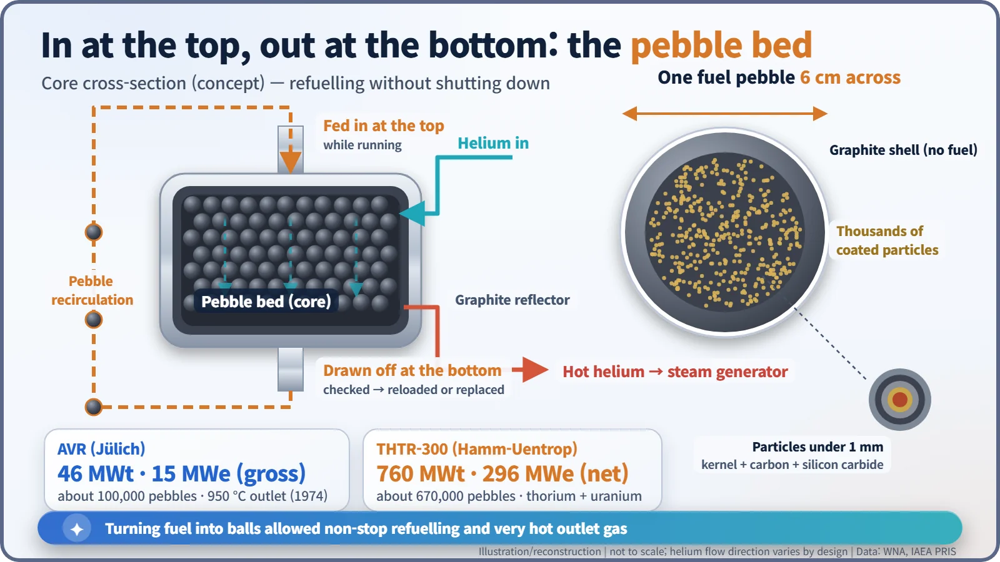
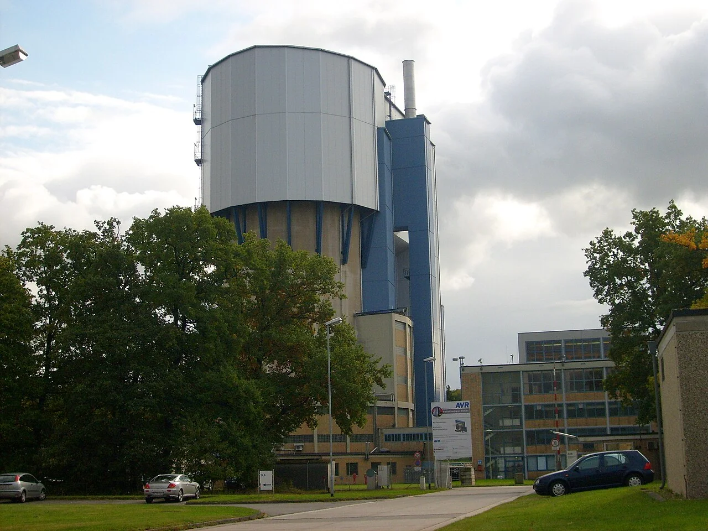
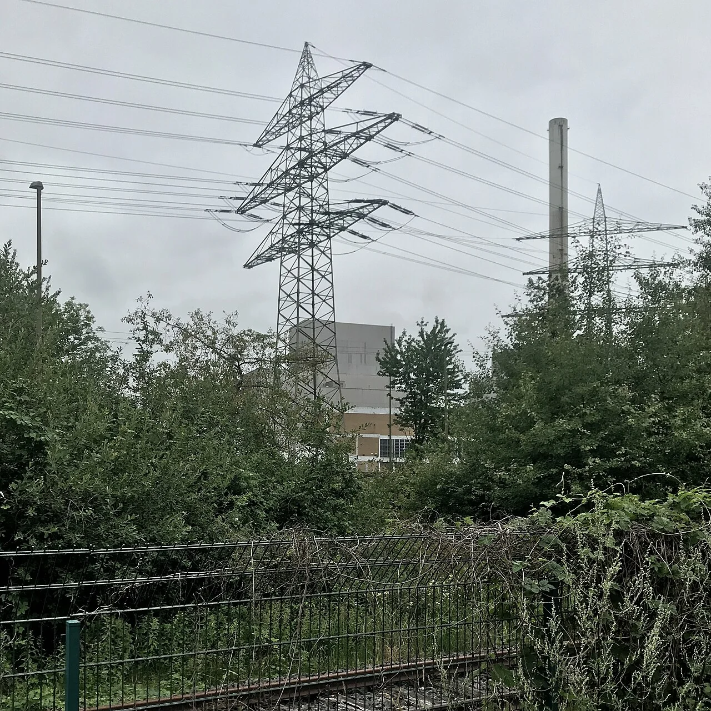
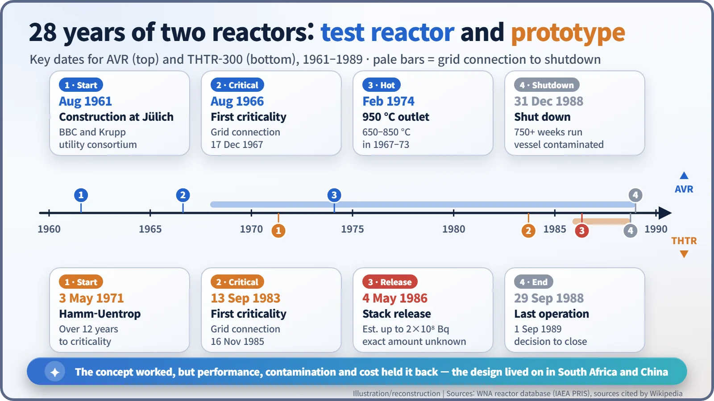

Nuclear History · 209
A Reactor Full of Pebbles — Germany's Pebble-Bed Experiment, AVR and THTR-300
Fuel poured in like gumballs: a 950 °C record, broken pebbles, a 1986 release and a long clean-up.
West Germany built two reactors that ran on hundreds of thousands of graphite fuel balls fed in at the top and drawn off at the bottom: the small AVR test reactor at Jülich (1967–1988) and the 300-megawatt THTR-300 at Hamm-Uentrop (1985–1988). AVR proved the pebble-bed idea and reached a 950 °C outlet temperature, but left a contaminated reactor vessel; THTR-300 was dogged by broken pebbles, a 1986 release and low availability. The design nevertheless lives on in South Africa's and China's pebble-bed projects.
A reactor fed like a gumball machine
Think of a gumball machine. You pour the balls in at the top, turn the handle, and one rolls out at the bottom. You never have to switch the machine off to refill it. In the 1950s and 1960s a group of West German engineers asked a serious question: could a nuclear reactor be fuelled the same way?
Their answer was the pebble-bed reactor: instead of fuel rods, hundreds of thousands of graphite balls about the size of a tennis ball, poured into the core.
An American idea that grew up in Germany
The idea started in the United States. In the 1940s the chemist Farrington Daniels (1889–1972) sketched a gas-cooled, high-temperature reactor at Oak Ridge, and the notion of fuel shaped as balls came out of that work. It was taken up and developed in the 1950s by the West German engineer Rudolf Schulten (1923–1996). [4]
Each fuel pebble is 6 cm across. Cut one open and you find thousands of tiny fuel particles, each less than 1 mm wide, scattered through the graphite. Every particle is wrapped in several layers of carbon and silicon carbide that are meant to keep radioactive fission products locked inside. Helium gas flows through the gaps between the pebbles and carries the heat away; the graphite slows the neutrons down. [5]

The small test reactor at Jülich: AVR
In August 1961 construction began next to the research centre at Jülich, between Cologne and Aachen. The plant was called AVR, short for Arbeitsgemeinschaft Versuchsreaktor ("experimental reactor consortium"). It was built by Brown Boveri (BBC) and Krupp and run by a consortium of regional electricity companies. It was modest: 46 MW of heat and 15 MW of electricity (gross). [1]
AVR first went critical, meaning the chain reaction became self-sustaining, in August 1966, and it was connected to the grid on 17 December 1967. Its core held about 100,000 pebbles, and each one took roughly six to eight months to work its way from top to bottom. Pebbles leaving the bottom were checked and either sent round again or replaced. Refuelling without shutting down was the first attraction. [1] [4]
The second was heat. In February 1974 AVR raised the temperature of the helium leaving the core to 950 °C. A water-cooled reactor delivers coolant at a little over 300 °C. Some accounts call 950 °C a world record, but that needs a caveat: the US experimental reactor UHTREX is reported to have gone higher. [4]

Scaling up: THTR-300
While AVR was running, Germany built a larger prototype. Construction of THTR-300 started on 3 May 1971 at Hamm-Uentrop in North Rhine-Westphalia. The first "T" stands for thorium. About 670,000 pebbles combined thorium-232 with uranium-235, with the aim of turning some of the thorium into new fuel, uranium-233. The plant was rated at 760 MW of heat and 296 MW of electricity (net). [2] [5]
It took more than twelve years to reach criticality, on 13 September 1983; grid connection followed on 16 November 1985. From late 1985, pebbles broke far more often than expected. The presumed cause was that, during commissioning, control rods had been pushed into the pebble bed too often and too deep. [2] [5]
4 May 1986 and the last run
On 4 May 1986, pebbles jammed in the fuel-loading system. While the operator was overriding the automatic loader by hand, against standard procedure, helium carrying radioactive aerosols escaped through the exhaust stack. The release was later estimated at up to about 2 × 108 becquerels, but because the aerosol monitors had been switched off, the exact amount was never established. [5]
The timing made it worse. Fallout from Chernobyl, eight days earlier, was then reaching Germany, so the release was at first unnoticed. It became a story when monitoring stations found protactinium-233, which did not fit the Chernobyl pattern. There were also press reports, and allegations, that the operator had been slow to report the event and had denied that anything was wrong. [5]
THTR-300 ran for the last time on 29 September 1988. Its availability in 1988 was 41%, against a target of 70%, and equipment failures, costs and post-Chernobyl public opinion all weighed on it. On 1 September 1989 the decision was taken to close it. After the fuel was removed, the plant was placed in "safe enclosure", where it remains. (Some sources give 20 April 1988 as the shutdown date, so it helps to keep "last operation" and "decision to close" apart.) [2] [5]

The problems that surfaced after shutdown
AVR ran for more than 750 weeks before it was shut down on 31 December 1988. Because nobody can put instruments inside a pebble bed, operators only learned about a year before shutdown that some of the fuel had been running much hotter than expected. The reactor vessel turned out to be heavily contaminated with caesium-137 and strontium-90. The strongest criticism came in a 2008 report by Rainer Moormann, a researcher at the Jülich research centre. In 2014 an independent expert group re-examined the plant's history, including a 1978 steam-generator leak and soil and groundwater contamination. In 2008 the vessel was filled with lightweight concrete to fix the radioactive dust in place, and the clean-up is being paid for with public money. [3] [4]
Yet the idea survived. Fuel tested in AVR fed into Siemens/Interatom's HTR-Module design, licensed in 1989 but never built. In 1996 that technology went to South Africa's utility Eskom, and the World Nuclear Association calls it a direct antecedent of South Africa's PBMR project (stopped in 2010) and of China's HTR-PM, which entered commercial operation in 2023. The gumball reactor stopped turning in Germany, but its pebbles are rolling somewhere else. [6]
